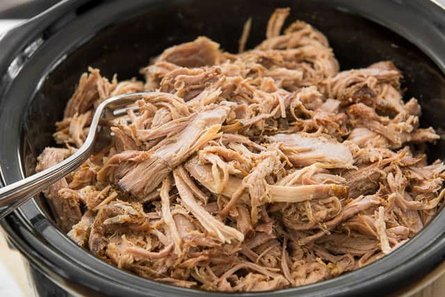

Mojo Pork

Description
My mojo pork is simply a pulled pork recipe but with mojo flavors of garlic, citrus, and mint.
Ingredients
Serves 8-10
- 1 yellow onion
- 1 7 lb pork butt
- lots of garlic
- 2 oranges
- 2 limes
- a few sprigs of mint
- oregano
- cumin
Steps
- Rub the pork with cumin oregano, salt and pepper. Marinate the pork overnight in the orange, limes, and garlic.
- In a large Dutch oven, heat some oil and then brown the pork on all sides.
- Chop the onions.
- Pour the leftover marinade in the pot. Put the pork in the pot with chopped onions on top.
- Close top and cook in the oven at 225.
- Periodically check tenderness of pork. It should be easily pulled apart with a fork. Takes about 1 hour per pound.
- When finished, pull the pork with forks and remove from the pot. Drizzle some of the juice onto the pork.
- Serve with congris and some platanos.
Home